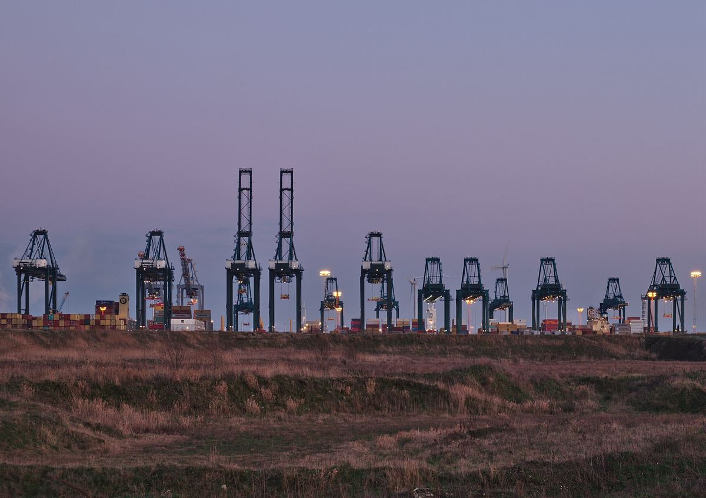
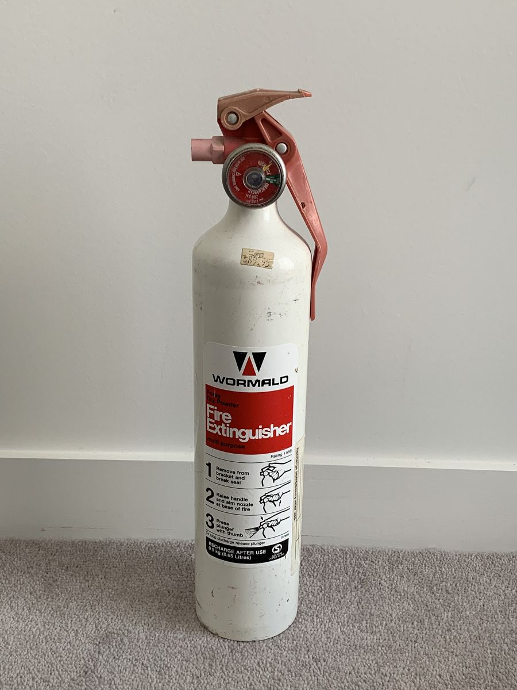
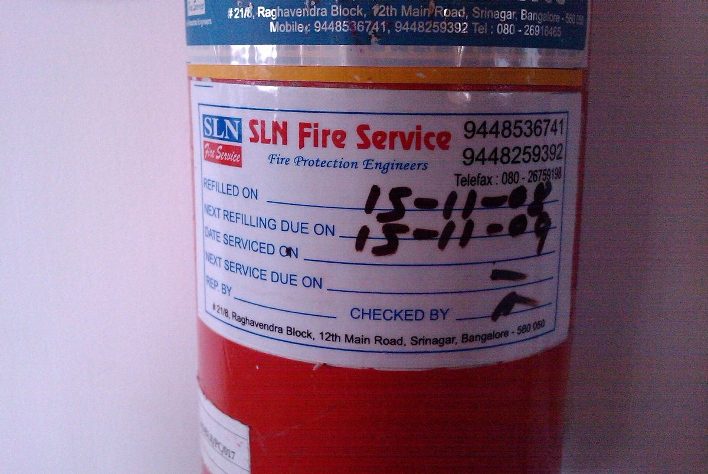

China's Fire Extinguisher Export Data, 2024-2026: $480M of Units, $245M of Parts, and the Used Trade Nobody Counts
Every importer asks the same question before their first container: how big is this market, and who am I actually competing with? This is what three years of Chinese customs data can answer, what it cannot answer, and why the second list is longer than most trade-data sellers admit.

The Short Version
China exported US$479.5 million of fire extinguishers in 2025 and US$245.0 million of extinguisher parts, plus US$38.5 million of extinguishing charges. Through September 2026 the unit line is running 9.2% ahead of the same period last year, parts 16.3% ahead, and charges 41.3% ahead.
The number that is not in that paragraph is the one people actually want: how many of those units were used. Chinese statistics do not answer it, because there is no separate code for used fire extinguishers anywhere in the tariff. Understanding why that gap exists, and what to look at instead, is more useful than any single figure.
How to read this data
- Source. Chinese customs export records at the 10-digit declaration level, as compiled by HS tariff databases and cross-checked against UN Comtrade for 2024, where the two agree to within 0.1% on value and unit count.
- Cut-off. Full years 2024 and 2025, plus January to September 2026. There is no full-year 2026 figure yet, and this article does not project one.
- Basis. FOB, current US dollars, not inflation-adjusted. Export values include re-exports of imported goods.
- The gap. No tariff line separates new from used. Condition is a declaration detail, not a classification. Every "used share" figure below is derived arithmetic and is labelled as such.
- Units. Quantities are reported by the exporter and are inconsistent between product types, so unit counts are used as a direction indicator only.
Three Lines, Three Different Businesses
The trade that people call "fire extinguisher exports" is really three separate flows with three different customers. Only the first one is what most importers picture.
| China 10-digit line | What it covers | 2024 | 2025 | Jan-Sep 2026 | 2026 vs 2025 |
|---|---|---|---|---|---|
| 8424100090 | Fire extinguishers, whether or not charged (new and used alike) | $447.7m | $479.5m | $389.6m | +9.2% |
| 8424901000 | Parts of fire extinguishers: valves, gauges, hoses, brackets, empty shells | $226.3m | $245.0m | $219.2m | +16.3% |
| 3813001000 | Charges for fire extinguishers: ABC and BC powder, foam concentrate | $38.8m | $38.5m | $40.0m | +41.3% |
Read the middle row twice. In 2025, China exported 51 cents of parts for every dollar of complete extinguishers. That is not a rounding error in a mature industry; it is the signature of a very large installed base being maintained rather than replaced. Every valve, gauge, hose and bracket in that figure is a decision by someone, somewhere, to keep a cylinder in service instead of buying a new one.
Parts are also growing faster than units: +16.3% against +9.2% in the first nine months of 2026. If you are planning a five-year position in this trade, that spread is the single most useful number in this article.
Monthly exports of fire extinguishers (8424100090), Oct 2025 - Sep 2026
US$ millions per month. Rolling twelve-month total: $512m.
The dip in February and March is the predictable one: Chinese New Year empties the factories for two to three weeks, and the orders booked in January ship in April. If your supplier promises a March loading to a Gulf port, ask which vessel, because the whole industry is short of stock that month.
Where the Money Goes, and the Gulf Shift
The destinations are the part of this dataset that surprises importers most. The biggest buyers of Chinese extinguishers are not in the Middle East, and they are not buying the cheapest units.
Top destinations by share of export value, 2025
Share of the $479.5m in HS 8424100090. UAE and Saudi Arabia highlighted in the table below.
| Destination | 2025 value | 2025 share | Jan-Sep 2026 | 2026 share | YoY |
|---|---|---|---|---|---|
| United Kingdom | $42.6m | 8.9% | $30.8m | 7.9% | -6.4% |
| Japan | $31.7m | 6.6% | $27.1m | 6.9% | +17.1% |
| Australia | $28.2m | 5.9% | $26.9m | 6.9% | +27.1% |
| Vietnam | $17.8m | 3.7% | $17.8m | 4.6% | +33.7% |
| United States | $20.1m | 4.2% | $16.2m | 4.2% | +7.3% |
| Korea | $22.5m | 4.7% | $16.1m | 4.1% | -11.0% |
| Spain | $17.9m | 3.7% | $15.6m | 4.0% | +14.7% |
| Greece | n/d | n/d | $13.5m | 3.5% | +47.8% |
| Saudi Arabia | $16.5m | 3.4% | $11.1m | 2.9% | -7.4% |
| UAE | $21.7m | 4.5% | below top ten | <2.9% | n/a |
UAE figure for 2026: the country fell outside the top ten, whose tenth place was $11.1m, so only an upper bound can be stated.
The UAE was the fifth-largest destination in 2025 at $21.7 million, up 10.8%. In the first nine months of 2026 it is not in the top ten at all, while Saudi Arabia stayed in at $11.1 million, down 7.4%. Both Gulf markets are small relative to the UK or Japan: together they took just under 8% of China's extinguisher export value in 2025, and the wider GCC is close to 10%.
That does not mean Gulf demand collapsed. Look at the parts line in the next section before drawing that conclusion, because the two lines tell opposite stories, and the difference is the most commercially interesting thing in the dataset.
Why "Used" Has No Line, and Where It Hides
HS 8424.10 reads "fire extinguishers, whether or not charged". It says nothing about condition, and neither does the Chinese 10-digit line under it. A factory-new 6 kg ABC unit and a 2016 cylinder that has been emptied, hydro-tested, repainted and re-valved are both declared as 8424100090. The used one just carries a different invoice description.

So the trade does not have a used-statistics problem. It has a classification blind spot, and three things fall into it:
- Refurbished complete units leave as 8424100090, exactly like new ones.
- Empty shells and cylinders - the single most common form of used stock - are widely declared under 8424901000 as parts, because an empty extinguisher body is, in tariff language, a part of a fire extinguisher. Chinese declaration practice lists empty shells as a recognised description under that line.
- Salvaged components (valves, gauges, hoses, brackets) also go out under 8424901000, mixed in with brand-new parts from the same factories.
Which means a container of hydro-tested cylinders heading for a Gulf refilling plant can appear in the national statistics as "parts of fire extinguishers, 18,400 kg" and never touch the extinguisher line at all.
What unit value can and cannot tell you
The one measurable signal is average value per unit. In 2024, China exported 43,097,900 units worth $447.7 million: $10.39 per unit on FOB terms. If the mix were all new stock, that number would sit close to the average factory price of a small dry powder unit. If a large share were refurbished, it would sit lower.
The problem is that both the new price and the used price are assumptions, and the answer swings wildly depending on which ones you pick.
| Assumed new unit FOB | Assumed refurbished unit FOB | Implied refurbished share |
|---|---|---|
| $11.00 | $6.00 | 12% |
| $12.00 | $4.00 | 20% |
| $12.00 | $7.00 | 32% |
| $13.00 | $5.00 | 33% |
| $15.00 | $6.00 | 51% |
Each row solves $10.39 = new x (1 - share) + refurbished x share, using 2024's published unit count and value.
The same official average is consistent with a refurbished share of 12% or of 51%, purely depending on price assumptions. Anyone who quotes you a precise "X% of Chinese extinguisher exports are used" is showing you their assumption, not the customs data. That is the honest state of the measurement, and it is worth knowing before you let a market-size slide influence a purchase order.

Parts: The Fastest-Growing Line, and the Gulf Signal
Parts exports were worth $226.3 million in 2024, $245.0 million in 2025 and $219.2 million in the first nine months of 2026, +16.3% on the same period. The top ten destinations account for about 61% of that value, and eight of them also buy complete units - which is what a maintenance economy looks like from the outside.
| Destination | 2024 | 2025 | Jan-Sep 2026 | YoY |
|---|---|---|---|---|
| United States | $32.3m | $36.2m | $28.8m | +5.0% |
| Korea | $19.4m | $19.3m | $17.7m | +11.7% |
| India | $13.5m | $15.3m | $16.6m | +46.2% |
| Vietnam | n/d | $9.1m | $16.3m | +153% |
| Russia | $9.0m | $12.8m | $10.8m | +5.9% |
| UAE | $6.3m | $12.2m | $10.0m | +8.3% |
| Italy | $20.2m | $15.0m | $9.5m | -21.6% |
| Indonesia | n/d | n/d | $9.1m | +169% |
| Canada | $11.4m | $9.2m | $9.0m | +10.3% |
| Malaysia | n/d | n/d | $8.8m | +46.8% |
The UAE is the only Gulf market in the parts top ten, and its trajectory is hard to miss: $6.3 million in 2024, $12.2 million in 2025 - a 93.9% jump - then $10.0 million in the first nine months of 2026. In the same window its imports of complete units fell out of the top ten.
Two explanations are consistent with that pattern, and the data does not choose between them. The first is capacity: UAE workshops that refill and re-valve locally need parts and shells rather than finished units, and that business has been expanding fast. The second is duty arithmetic: Saudi Arabia applies 15% to finished 8424.10 units but a much lower rate to parts, which makes split shipments attractive for anyone serving both markets from a Dubai base. Confirm which one applies to your route with a broker before you build a pricing model on it.

Powder: The Line the Gulf Does Not Buy From China
Extinguishing charges are a different business altogether, and the destination map looks nothing like the others. In January to September 2026, $40.0 million of HS 3813001000 left China, up 41.3%, and not one GCC country made the top ten.
| Destination | Jan-Sep 2026 | Share | YoY |
|---|---|---|---|
| Vietnam | $8.7m | 21.7% | +617% |
| United States | $5.4m | 13.5% | +32.9% |
| Indonesia | $3.9m | 9.8% | +57.2% |
| Korea | $3.4m | 8.4% | +6.4% |
| India | $3.0m | 7.6% | +4.4% |
| Malaysia | $1.9m | 4.7% | -10.1% |
Powder is heavy and cheap, so ocean freight eats a large share of its FOB value; it is also the one input that Gulf refillers can often source regionally or blend locally. The observable fact is the absence from the top ten. The explanation above is inference, and it holds until someone shows you a Gulf refiller buying Chinese ABC powder at scale.
What this means practically: if you are assembling a container for a Gulf refilling customer, the powder usually comes from their side, not yours. Quote the cylinders, valves and gauges, and let them charge the units.
What This Means If You Are Buying
| If you are... | Watch this line | What the 2026 data says |
|---|---|---|
| An importer reselling complete units | 8424100090 by destination | Up 9.2%; Gulf share under 10%, so you are competing with UK, Japanese and Australian buyers, not with your neighbours |
| Running a refilling workshop | 8424901000 | Up 16.3%; valves, gauges and shells are the growth end of the trade |
| Buying used stock for resale | Unit value, not volume | No published used figure exists; ask for the line declared on the bill of lading instead |
| Blending or selling agent | 3813001000 | Up 41.3%, but concentrated in South-East Asia and the US, not the Gulf |
| A Chinese exporter's competitor | All three lines | Supply is growing, not shrinking; the 2026 uplift is volume, not a price signal |
Five checks before you trust any market number
- Ask which HS line. A figure with no line number is not a figure, it is a mood.
- Ask for the period. Full year, rolling twelve months and "2026" are three different things, and 2026 is nine months long.
- Ask whether it is value or units. Value rises with price; units rise with demand. They rarely move together.
- Ask if it includes parts. A "fire extinguisher market" that quietly includes 8424.90 can be twice the size of the actual unit trade.
- Ask how used stock is counted. If the answer is confident, the source is guessing.
For the tariff detail behind these lines, including the 12-digit GCC sub-codes and the 5% versus 15% duty gap, see our HS code and import duty guide. For the cost of putting a container of used units into Jebel Ali, see the 40ft cost comparison.
Frequently Asked Questions
How much are China's fire extinguisher exports worth?
$479.5 million in 2025 under HS 8424100090, up 7.1% on 2024's $447.7 million. January to September 2026 reached $389.6 million, up 9.2% on the same period of 2025, and the rolling twelve months to September 2026 total $512 million.
Do Chinese customs statistics show used fire extinguishers separately?
No. HS 8424.10 covers extinguishers whether or not charged and makes no distinction by condition, so new, refurbished and used units all ship under 8424100090. There is no published second-hand line, and any precise used-volume figure you see is an estimate built from unit values or shipping records, not a customs statistic.
What is the average export price of a fire extinguisher from China?
In 2024, 43,097,900 units were exported for $447.7 million, or $10.39 per unit FOB. Treat that as an index rather than a price: it blends 1 kg vehicle units with 50 kg wheeled units, and it blends new stock with refurbished stock.
Why are parts growing faster than complete units?
Parts grew 16.3% in the first nine months of 2026 against 9.2% for complete units, and charges grew 41.3%. Parts grow when destination countries refill and refurbish locally instead of importing finished units; the UAE is the clearest case, with parts imports doubling in 2025 while complete-unit imports dropped out of the top ten in 2026.
Which countries buy the most Chinese fire extinguishers?
In 2025: the United Kingdom at 8.9% of export value, Japan at 6.6%, Australia at 5.9%, Korea at 4.7%, the UAE at 4.5%. Saudi Arabia ranked ninth at 3.4%. The two Gulf markets together took just under 8%, and the wider GCC close to 10%.
Is extinguishing powder included in fire extinguisher export figures?
No, it is a separate line. Charges sit under HS 3813001000: $38.5 million in 2025 and $40.0 million in January to September 2026, up 41.3%, with Vietnam alone taking 21.7%. No GCC country appears in the powder top ten.
Get a Quote With the Line Already Decided
FireGuard Trading exports dry powder, foam, CO2 and water extinguishers, plus valves, gauges, hoses and empty cylinders, from China to importers and refilling workshops across the GCC. Every shipment leaves with the commercial invoice, packing list and certificate of origin, and with the 10-digit Chinese line stated on the export declaration so your broker can match it to the destination tariff without guessing.
Tell us the destination country, the quantity and whether you want charged units, empty cylinders or a mixed container, and we will reply within 24 hours with FOB or CIF pricing and the line we will declare.
Related reading
- Fire Extinguisher HS Code 8424.10: New vs Used, and the GCC Duty You Actually Pay
- New vs Used Fire Extinguishers: The Real Cost of a 40ft Container to Jebel Ali
- Complete Guide to Exporting Used Fire Extinguishers from China to the Middle East
- Refilling Plants in the Middle East & North Africa: 19 Plants, 9 Countries